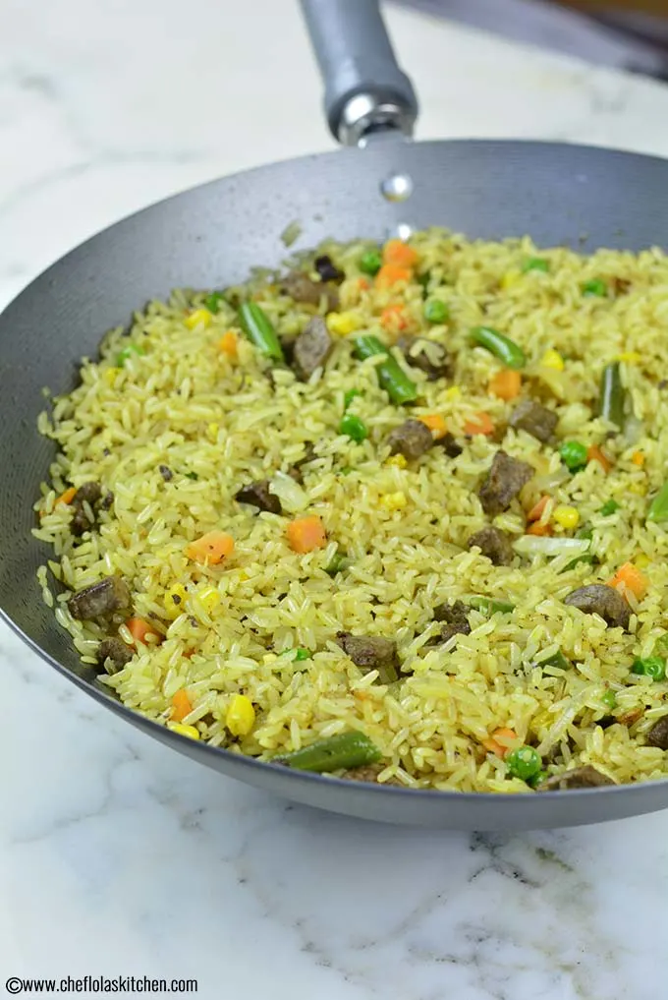

Fried Rice

Description
Nigerian Fried Rice is a very simple yet delicious recipe. This version relies on a ton of fresh vegetables, Beef Liver, and a little bit of oil for crisping it up.
The added beef liver gives the fried Rice a very nice rich but subtle taste, and this is why it is one of the most popular choices in Nigeria. Though you can also use Shrimp or any protein you’d like. If you would love to make vegan fried rice, you can omit the Beef liver or Shrimps entirely!
Ingredients
- 2 cups cooked rice
- 1/2 cup chicken stock
- 3 tbsp oil for frying
- 1 cup onion diced
- 1 cup mixed Vegetables Carrots, Sweet Peas, Sweet Corn and green beans
- 1/2 tsp thyme
- 1 tsp Curry powder
- 2 scallions diced
- 1 chicken stock cube
- 1 cup beef liver cubed
- salt to taste
- 1/4 tsp Cayenne pepper
Steps
-
It’s ok to add a dash of cayenne pepper if you like some heat!
-
Don’t over boil your Rice before frying it, otherwise, you will end up with soggy fried rice.
-
Fried rice is best enjoyed when the Veggies remain crunchy, so don’t overcook your veggies.
-
I used mixed veggies which consist of Carrots, Sweet Peas, Sweet Corn, and Green Beans. However, vegetables like sweet bell peppers can also be used.
-
In order to achieve that nice coveted crisp, you will need to turn up the heat to high during the frying process and stir continuously as you allow the rice to heat up.
-
I added pieces of beef liver to my fried Rice, a lot of people like this as well, but if you don’t want it you are free to leave it out, you will still enjoy the total goodness of the Fried Rice.
-
When making this Fried Rice, it is best to use Chicken stock or Turkey stock because of their mild taste. The beef stock should be avoided as it can overpower the taste of the fried rice.